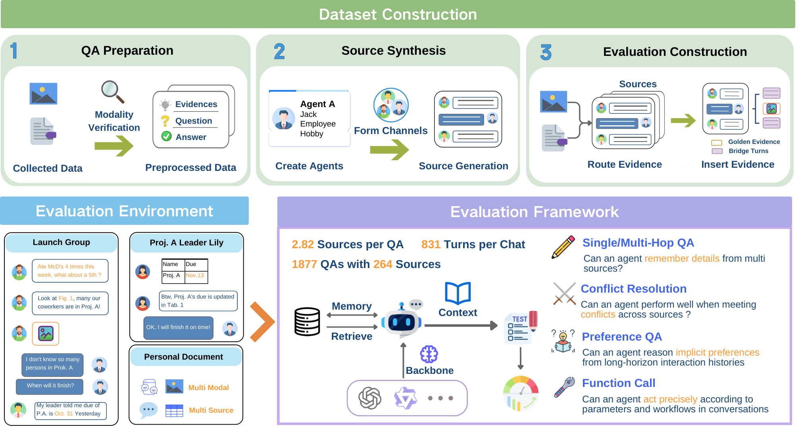
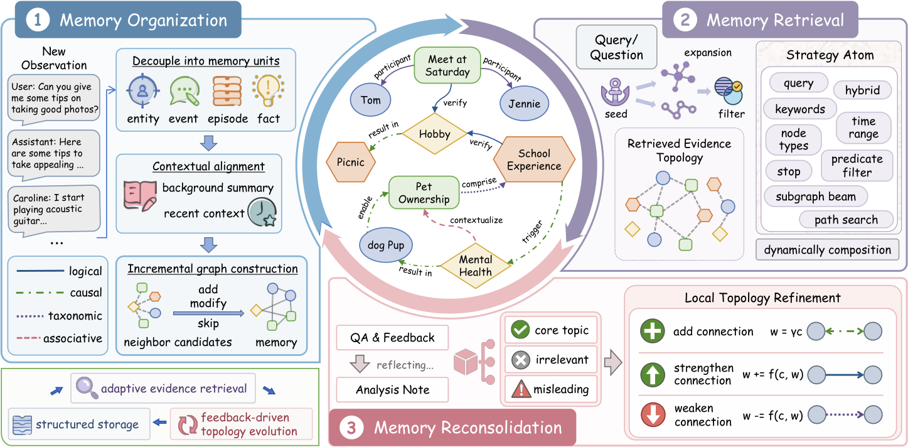

Yukai WangHi, I am Yukai Wang, an undergraduate pursuing dual degrees in Computer Science and Technology and Bioinformatics at Shanghai Jiao Tong University (SJTU). In summer 2026, I joined the University of Notre Dame through the iSURE program, working with Prof. Meng Jiang in the DM2 Lab on information retrieval and LLM agents. Previously, I worked with Prof. Weiwen Liu at SJTU’s APEX Lab on multimodal agent memory. My research interests include long-term memory for LLM agents, multimodal retrieval, and LLM post-training. Email / CV / Google Scholar / GitHub / LinkedIn |
News
- 2026 Received the National Scholarship for the second consecutive year (RMB 10,000).
- 2026 Our paper SMMBench has been accepted to NeurIPS 2026.
- 2026/09 Our paper REALM is available on arXiv.
- 2026/07 Joined the DM2 Lab at the University of Notre Dame through the iSURE program, working with Prof. Meng Jiang.
- 2025 Received the National Scholarship (RMB 10,000).
- 2024 Received the Zhiyuan Honors Scholarship (RMB 5,000) and the Undergraduate Excellence Scholarship, Class B (RMB 1,000).
- 2023 Received the Zhiyuan Honors Scholarship (RMB 5,000).
Publications & Preprints [Google Scholar]
 |
SMMBench: A Benchmark for Source-Distributed Multimodal Agent MemoryNeurIPS, 2026 · Accepted
We introduce a benchmark of 1,877 samples from 264 sources to evaluate how agents retrieve and combine multimodal evidence across sources. |
 |
Retrieval-Driven Memory Reconsolidation for Long-Term LLM AgentsICLR, 2027 · Under review
We propose REALM, which combines a heterogeneous memory graph, adaptive retrieval, and retrieval-driven reconsolidation for long-term LLM agents. |
Research Experience
University of Notre Dame, DM2 LabNotre Dame, IN, USA | Jul. 2026 – Present
Undergraduate Researcher
Advisor: Prof. Meng Jiang
|
|
Shanghai Jiao Tong University, APEX LabShanghai, China | Apr. – Sep. 2026
Undergraduate Researcher
Advisor: Prof. Weiwen Liu
|
|
Shanghai Jiao Tong University, APEX LabShanghai, China | Jan. – May 2026
Undergraduate Researcher
Advisor: Prof. Weiwen Liu
|
Education
Shanghai Jiao Tong UniversityShanghai, China | Sep. 2023 – Jun. 2027 (expected)
B.Eng. in Computer Science and Technology
B.S. in Bioinformatics (dual degree)
Average: 90.15 / 100 | National Scholarship (2025 & 2026)
|
|
University of Notre DameNotre Dame, IN, USA | Summer 2026
International Summer Undergraduate Research Experience (iSURE)
|
Honors and Awards
- National Scholarship, 2025 & 2026 — RMB 10,000 each year.
- Zhiyuan Honors Scholarship, 2023 & 2024 — RMB 5,000 each year.
- Undergraduate Excellence Scholarship, Class B, 2024 — RMB 1,000.
Miscellaneous
Outside of research, I enjoy traveling and exploring different cities. I also like listening to music, especially Jay Chou, G.E.M., and Eason Chan.